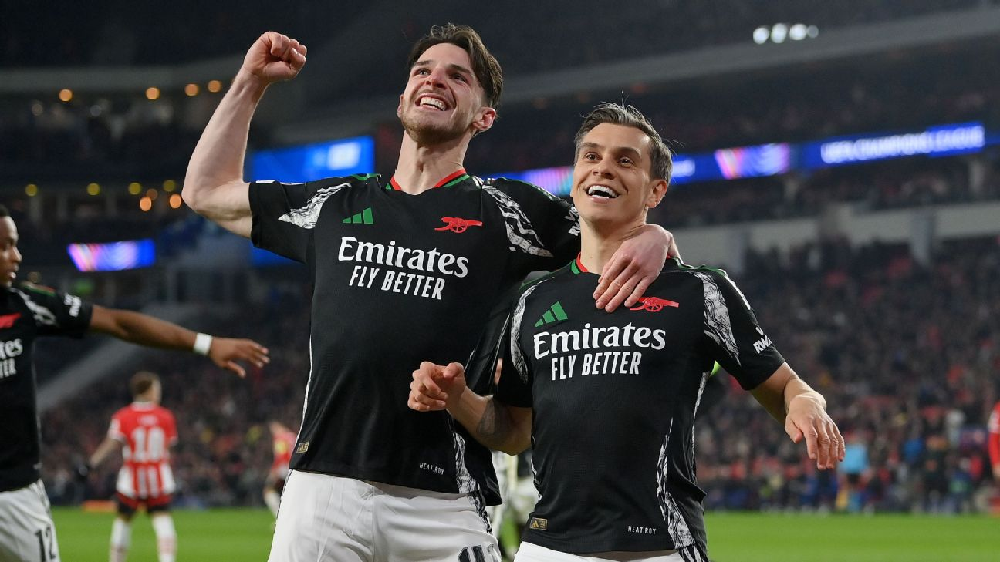

Arsenal rattled in three goals in a 13-minute spell in the first half and then ruthlessly added four more after the break as they made Champions League history with a 7-1 win at PSV Eindhoven in the first leg of their last-16 tie Tuesday. The win was the largest by a road team in a Champions League knockout game and Arsenal's biggest victory away from home in any Champions League match. Jurrien Timber opened the scoring in the 18th minute, followed by a strike from teenager Ethan Nwaneri before Mikel Merino added the third in the 31st minute. The Dutch champions pulled one back from a Noa Lang penalty for a 3-1 half-time deficit, but two goals in the opening three minutes of the second half reinforced Arsenal's dominance, with captain Martin Ødegaard and Leandro Trossard adding their names to the scoresheet. Ødegaard got his second goal in the 73rd minute before substitute Riccardo Calafiori netted five minutes from time to complete the rout as Arsenal became the first team to score seven goals in an away Champions League knockout game.
